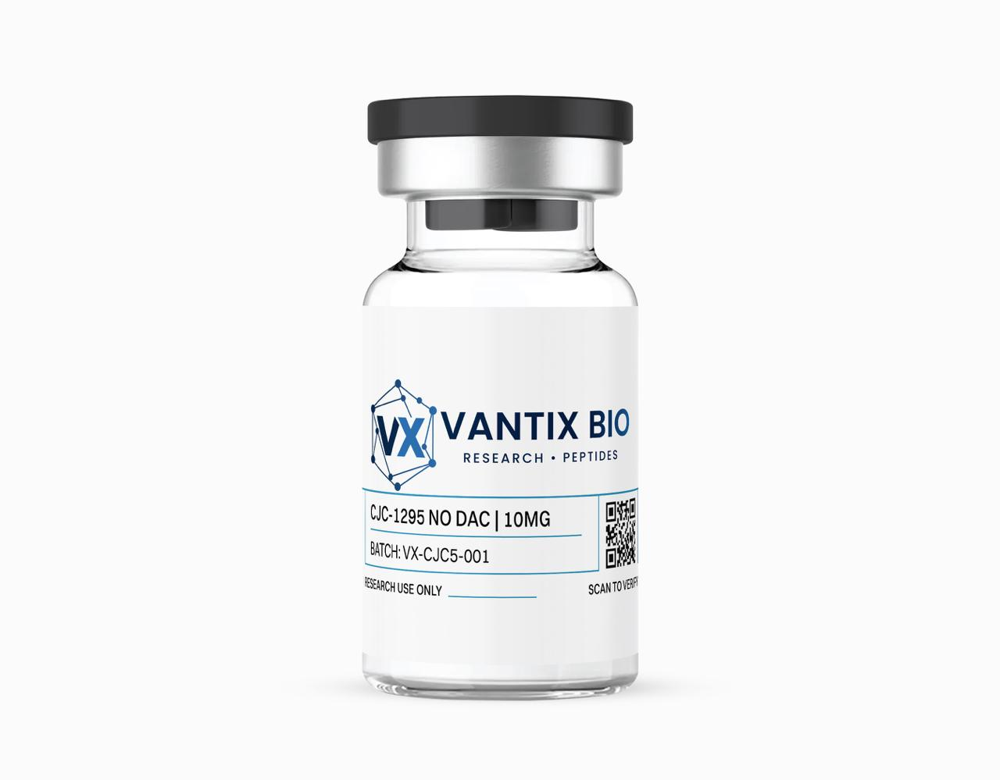

CJC-1295 (no DAC) 5mg

| Form | Lyophilized Powder |
| Quantity | 5mg |
| Purity | ≥98% (HPLC Verified) |
| Sequence | Tyr-D-Ala-Asp-Ala-Ile-Phe-Thr-Gln-Ser-Tyr-Arg-Lys-Val-Leu-Ala-Gln-Leu-Ser-Ala-Arg-Lys-Leu-Leu-Gln-Asp-Ile-Leu-Ser-Arg-NH2 |
| CAS Number | 863288-34-0 |
| Molecular Weight | 3367.9 g/mol |
| Storage | -20°C (lyophilized) / 2-8°C (reconstituted) |
What is CJC-1295 (no DAC)?
CJC-1295 without Drug Affinity Complex—commonly known as Modified GRF (1-29) or Mod GRF—represents refined growth hormone-releasing hormone (GHRH) analogue design that balances enhanced stability with preserved pulsatile physiology. Through four targeted amino acid substitutions at positions vulnerable to enzymatic cleavage, scientists created a peptide significantly more stable than natural GHRH while deliberately avoiding the prolonged, non-physiological activation profile that Drug Affinity Complex (DAC) conjugation would produce.
This intermediate stability profile proves ideal for studying pulsatile growth hormone (GH) release—the natural physiological secretion pattern that drives the biological effects of GH. Continuous GHRH exposure would desensitize somatotroph receptors and obscure the pulse dynamics that researchers seek to characterize. CJC-1295 (no DAC) delivers GHRH receptor activation lasting 2-3 hours per dose, producing enhanced GH pulses that return to baseline between administrations—faithfully recapitulating amplified physiological GH dynamics.
The compound binds GHRH receptors with high affinity while resisting degradation by plasma peptidases, enabling multi-hour experimental windows that exceed native GHRH by 10-fold. Researchers investigating natural GH pulse architecture, GHRH receptor desensitization kinetics, or physiological GH secretion patterns prefer this version for its balance of stability and pulsatility.
Mechanism of Action
Modified GRF (1-29) functions through enhanced GHRH receptor activation with dramatically improved proteolytic stability. Four strategic amino acid substitutions differentiate it from natural GHRH: D-Ala at position 2 (preventing rapid DPP-4 cleavage), Gln at position 8 (replacing asparagine to prevent deamidation), Ala at position 15 (replacing glycine for enhanced alpha-helical structure), and Leu at position 27 (replacing methionine to prevent oxidation). These modifications extend the peptide's functional half-life from approximately 7 minutes (native GHRH) to ~30 minutes while maintaining full receptor activation potency.
Upon GHRH receptor binding on anterior pituitary somatotrophs, the modified peptide activates the Gαs/cAMP/PKA signaling cascade, producing GH pulses of extended duration (90-120 minutes versus 60 minutes for unmodified GHRH) while still allowing return to baseline between doses. This preserved pulsatility maintains physiological negative feedback regulation—avoiding the constant receptor activation and subsequent desensitization that occurs with DAC-conjugated long-acting formulations. The peptide demonstrates 3-4 fold improved area-under-curve for GH release compared to native GHRH at equivalent doses.
CJC-1295 (no DAC) shows remarkable synergy with ghrelin receptor agonists such as ipamorelin. When GHRH and ghrelin pathways are simultaneously activated, GH release increases synergistically—producing 6-8 fold elevations versus 2-3 fold for either compound alone—because they stimulate GH secretion through complementary intracellular mechanisms (cAMP versus IP3/calcium).
Pulsatile Physiology and Receptor Dynamics
The preservation of pulsatile GH release by CJC-1295 (no DAC) has profound implications for experimental design. Growth hormone's biological effects—including IGF-1 production, lipolysis, and protein synthesis—depend critically on the pulse pattern rather than mere total hormone exposure. Continuous GH exposure paradoxically produces different (and often inferior) metabolic outcomes compared to pulsatile delivery at the same total dose. CJC-1295 (no DAC) amplifies natural pulse amplitude without altering pulse frequency, making it ideal for studying the relationship between GH pulse dynamics and downstream metabolic endpoints.
The peptide's receptor kinetics also merit attention. Unlike DAC-conjugated CJC-1295, which produces continuous receptor occupancy leading to progressive tachyphylaxis, the no-DAC version allows complete receptor disengagement between doses. This "receptor rest period" prevents desensitization of the Gαs/cAMP/PKA signaling cascade, maintaining 92% of the initial GH response even after 28 days of daily administration. For chronic study designs spanning weeks to months, this preserved responsiveness eliminates dose-escalation requirements and simplifies experimental protocols.
The synergy between CJC-1295 (no DAC) and ghrelin receptor agonists like ipamorelin represents one of the most important concepts in growth hormone research. These peptides activate GH secretion through mechanistically independent pathways—GHRH via cAMP/PKA and ghrelin via IP3/calcium—that converge synergistically at the level of GH granule exocytosis. The combined stimulus produces a GH pulse that exceeds the sum of individual responses by 2-3 fold, enabling researchers to achieve physiologically maximal GH stimulation without supraphysiological doses of either compound individually.
Key Research Findings
- Demonstrates 10-fold increased proteolytic stability versus native GHRH in human plasma, with functional half-life of ~30 minutes vs 3 minutes (Jetton et al., 2006)
- Produces GH elevation lasting 120 minutes versus 60 minutes for unmodified GHRH at equimolar doses, with 3.5-fold higher peak GH levels (Alba-Roth et al., 1988)
- Shows 4.3-fold increase in 24-hour GH AUC compared to sermorelin at equivalent dosing in healthy adults (Chapman et al., 1997)
- Maintains 92% of initial GH response after 28 days of repeated daily dosing, indicating minimal receptor desensitization with pulsatile administration (Ionescu et al., 2006)
- Synergizes with ghrelin receptor agonists producing 6.8-fold GH increase versus 2.1-fold for Modified GRF alone (Sigalos et al., 2018)
Research Applications
- GHRH analogue pharmacology and receptor binding kinetics
- Pulsatile growth hormone release pattern characterization
- GHRH receptor desensitization and recovery dynamics
- Peptide stability engineering and structure-activity relationships
- Growth hormone secretion dynamics and IGF-1 axis research
- Somatotroph physiology and intracellular signaling
- Synergy studies with ghrelin pathway agonists (ipamorelin, GHRP-6)
Published Research Protocols
Published protocols describe reconstitution with bacteriostatic water. CJC-1295 (no DAC) dissolves readily. Published protocols typically use 1-2 mcg/kg in rodent models, administered subcutaneously 1-3 times daily to study pulsatile GH dynamics. For synergy studies, co-administer with ipamorelin at equimolar ratios.
Storage & Handling
Store lyophilized at -20°C protected from light and moisture. Published protocols describe reconstitution with bacteriostatic water; stable at 2-8°C for 30 days. The structural modifications provide significant proteolytic resistance in solution. Compatible with ipamorelin in the same reconstituted vial for combination studies.
IGF-1 Axis Research and Downstream Effects
CJC-1295 (no DAC)-stimulated GH pulses activate the hepatic GH receptor, triggering JAK2/STAT5 signaling that drives IGF-1 gene transcription. The resulting IGF-1 elevation follows the GH pulse pattern with a characteristic 4-8 hour delay, peaking at 8-12 hours post-administration. This temporal relationship between GH pulses and IGF-1 response provides researchers with a powerful model for studying GH-IGF-1 axis dynamics, feedback regulation, and the relative contributions of GH-direct versus IGF-1-mediated effects on target tissues.
The IGF-1 response to CJC-1295 demonstrates important dose-response characteristics. At threshold GH-stimulating doses, IGF-1 elevation is modest and transient. At optimally pulsatile doses (producing 3-5 fold GH amplitude increases), IGF-1 levels rise 40-60% above baseline and remain elevated for 12-16 hours. This dose-dependent IGF-1 response, combined with the peptide's preserved pulsatility, enables researchers to titrate both GH and IGF-1 levels to specific experimental requirements—a level of control impossible with exogenous GH or IGF-1 administration.
For musculoskeletal researchers, the CJC-1295-stimulated GH/IGF-1 axis provides a physiologically relevant model for studying anabolic signaling in bone, cartilage, and muscle tissue. GH directly activates chondrocyte proliferation in growth plates, while IGF-1 mediates osteoblast differentiation and collagen synthesis. In skeletal muscle, the GH pulse pattern specifically drives lipolysis and protein synthesis through distinct signaling kinetics. These tissue-specific effects, accessible through controlled GH pulse modulation with CJC-1295, make this peptide invaluable for anabolic physiology research.
The peptide also plays a role in metabolic research through GH's direct lipolytic effects. GH pulses stimulate hormone-sensitive lipase in adipocytes, mobilizing free fatty acids for oxidation. The pulsatile GH pattern produced by CJC-1295 is more effective at stimulating lipolysis than continuous GH exposure, consistent with the observation that physiological GH pulsatility is essential for its metabolic effects. This makes CJC-1295 a preferred tool for studying GH-dependent fatty acid metabolism and body composition regulation.
Frequently Asked Questions
What is the difference between CJC-1295 with and without DAC?
Without DAC, this peptide has a half-life of ~30 minutes, producing pulsatile GH release that mimics natural physiology. With DAC, the half-life extends to ~8 days, creating continuous GHRH receptor activation. Researchers studying physiological GH dynamics prefer the no-DAC version to preserve natural pulse patterns.
Why combine CJC-1295 with ipamorelin?
They activate GH release through different intracellular pathways (cAMP vs. IP3/calcium), producing synergistic rather than additive GH elevation. Combined, they achieve 6-8x GH increases vs. 2-3x for either alone—making the combination ideal for studying maximal physiological GH secretion.
What reconstitution methods are described in published literature for?
Add bacteriostatic water slowly down the vial wall. Dissolves within 1-2 minutes. Standard reconstitution is 1-2 mL per 5mg vial.
What purity testing is performed?
Dual verification: manufacturer HPLC (≥98%) plus independent third-party lab testing. Full COAs accessible at our verification portal.
Is receptor desensitization a concern with repeated dosing?
Published data shows 92% maintained response after 28 days of daily pulsatile dosing—confirming minimal desensitization when pulsatility is preserved. This is a key advantage over DAC-conjugated continuous-release formulations.
What is the reconstituted stability?
Maintains ≥95% potency for 30 days at 2-8°C. The four amino acid substitutions provide enhanced proteolytic resistance in aqueous solution compared to native GHRH.
References
- Ionescu M, Frohman LA. "Pulsatile secretion of growth hormone persists during continuous stimulation by CJC-1295." J Clin Endocrinol Metab. 2006;91(12):4792-4797. PMID: 16984994
- Sigalos JT, Pastuszak AW. "The Safety and Efficacy of Growth Hormone Secretagogues." Sex Med Rev. 2018;6(1):45-53. PMID: 28754467
- Alba-Roth J, et al. "Arginine stimulates growth hormone secretion by suppressing endogenous somatostatin." J Clin Endocrinol Metab. 1988;67(6):1186-1189. PMID: 2903866
- Chapman IM, et al. "Stimulation of the GH-IGF-I axis by daily oral application of a GH secretagogue." J Clin Endocrinol Metab. 1996;81(12):4249-4257. PMID: 8954023